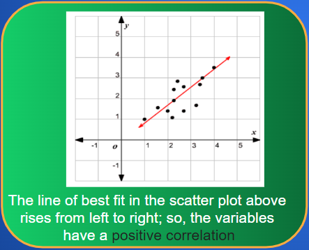
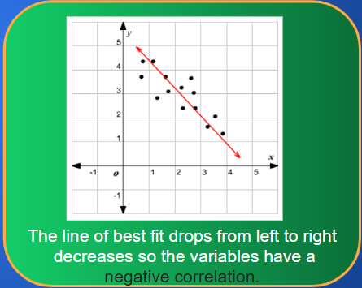
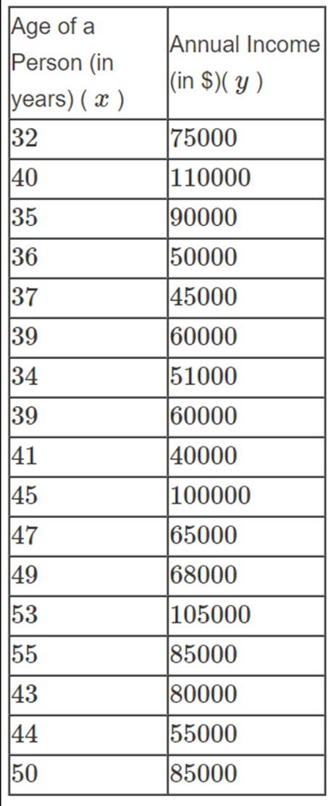
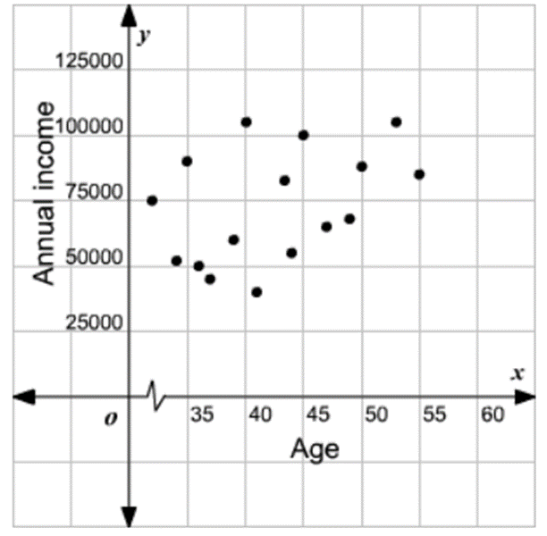
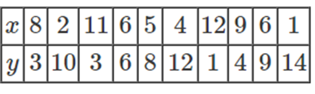
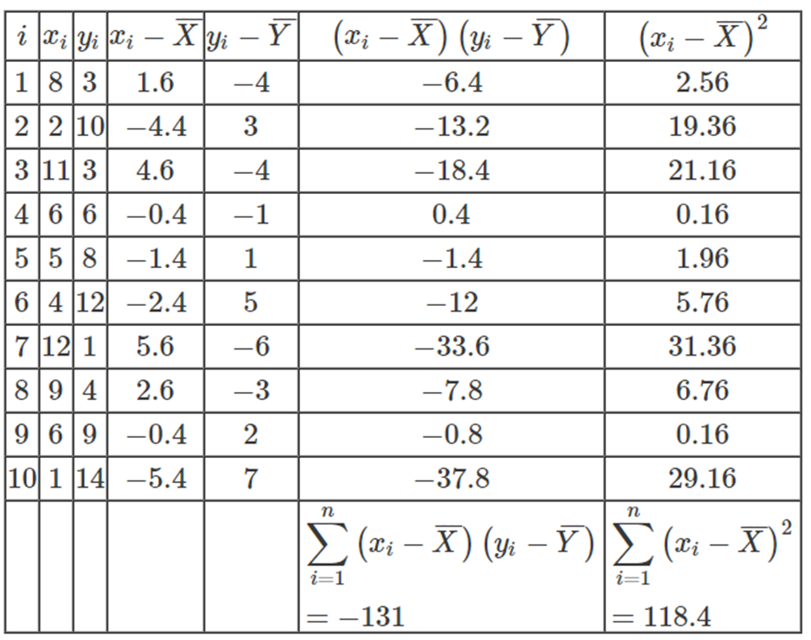
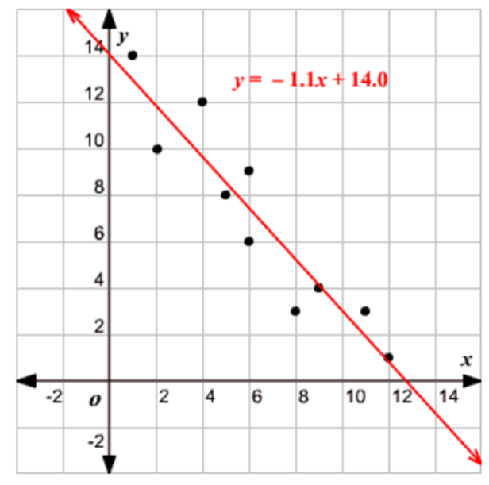

Lines of Best Fit
A line of best fit is a straight line drawn through the maximum number of points on a scatter plot balancing about an equal number of points above and below the line.
It is used to study the nature of the relation between two variables.


Example
|
Draw a line of best fit for the scatter plot given. Solution: Draw a line through the maximum number of points, balancing about an equal number of points above and below the line. |


Example
|
Draw a line of best fit for the scatter plot given.  Solution: Plot the age in the x-axis and the income in the y-axis and mark the points.  Draw a line through the maximum number of points balancing about an equal number of points above
|

Least Square Method
Use the following steps to find the equation of the line of best fit for a set of ordered pairs (x1,y1),(x2,y2),...(xn,yn).
Step 1: Calculate the mean of the x -x-values and the mean of the y -y-values.

Step 2: The following formula gives the slope of the line of best fit:

Step 3: Compute the y -y-intercept of the line by using the formula:

Step 4: Use the slope m and the y-intercept b to form the equation of the line.
Example
|
Use the least square method to determine the equation of the line of best fit for the data. Then plot the line.  Solution: Step 1: Calculate the mean of the x -x-values and the mean of the y -y-values.
Now calculate xi−X, yi−Y, (xi−X)(yi−Y), and (xi−X)2 for each i.  Step 2: The following formula gives the slope of the line of best fit: Step 3: Compute the y-intercept of the line by using the formula: Step 4: Use the slope m and the y-intercept b to form the equation of the line. The slope of the line is −1.1 and the y -y-intercept is 14.0. Draw the line on the scatter plot.  |